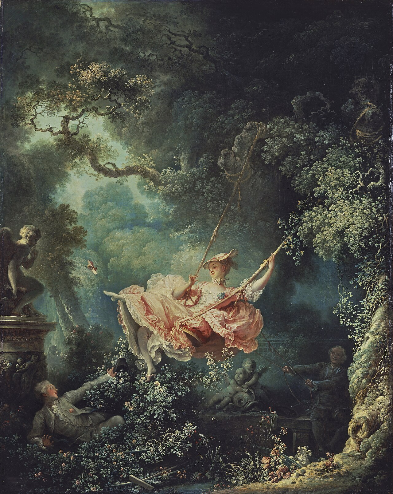
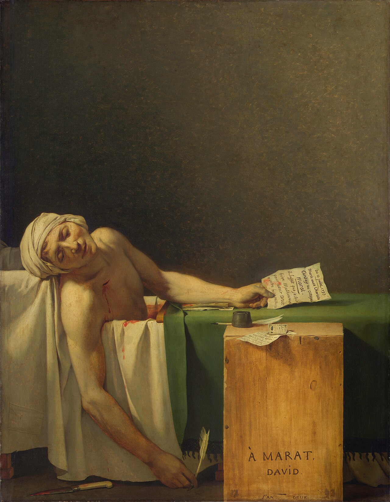
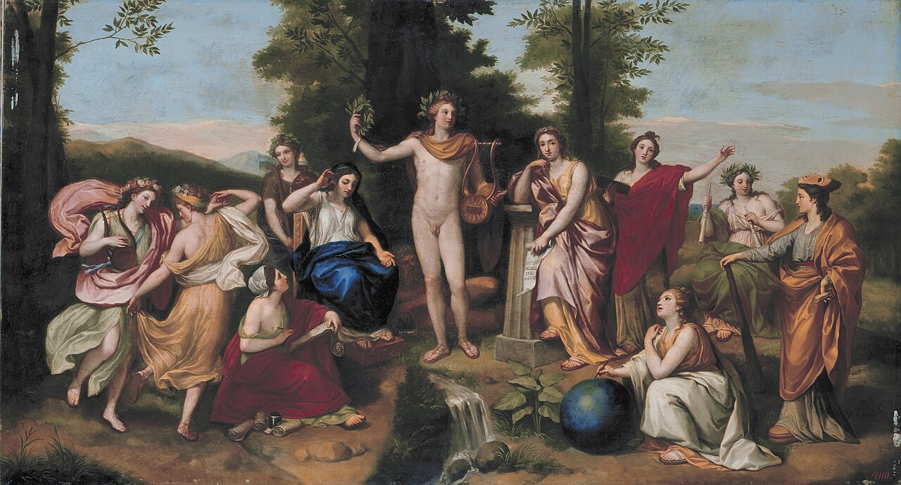

로코코
18세기 중반까지 프랑스 상류사회에서 사랑·사교·감각적 즐거움을 다룬 로코코가 번성했는데, 불과 수십 년 뒤 다비드는 의무, 절제, 희생, 죽음, 공공의 가치를 그림의 중심에 놓았다. 이 변화는 한 사건 때문에 갑자기 일어난 것이 아니다. 고대 도시의 발굴, 계몽주의의 도덕·이성 담론, 혁명기의 시민 정치가 순차적으로 겹치면서 미술에 요구되는 역할 자체가 달라졌다. 그러나 이 설명만으로는 부족하다. 로코코에 대한 반발은 단순한 취향 변화가 아니라, 궁정과 살롱의 사치, 성직자·귀족 특권, 불평등한 조세와 부패한 구체제에 대한 정치적 거부감과도 연결되어 있었다. 그래서 로코코의 우아한 사랑과 유희는 점차 특권층의 사적 쾌락을 미화하는 이미지로 읽혔고, 신고전주의의 절제와 희생은 공공의 덕목을 요구하는 새로운 시민 정치의 시각 언어가 되었다.
상세 학습
신고전주의는 고고학적 발견과 계몽주의, 혁명과 국가 건설의 환경에서 고대 그리스·로마의 형식을 공적 도덕과 시민적 모범의 언어로 다시 사용했다. 그 힘은 고전 취향만이 아니라 특권층의 사적 쾌락과 구체제의 부패에 대한 반감에서도 나왔다. 고전을 닮는 것보다 현재의 정치·윤리에 고전을 적용한 방식이 중요하다.
로코코의 유동적 곡선과 사적 유희를 선, 질서, 공적 주제로 바꾸었고, 그 변화에는 특권층 문화에 대한 정치적 피로감이 함께 작용했다. 낭만주의는 그 보편적 규범에 상상력과 역사적·개인적 감정을 맞세웠다.
흔한 오해: 신고전주의가 감정을 배제한 차가운 양식이라는 뜻은 아니다. 감정을 없애기보다 시민적 교훈을 위해 절제하고 조직한다.
단 하나의 사건을 고르면 안 된다. 신고전주의는 프랑스 혁명 이전부터 이미 형성되어 있었다. 특히 다비드의 대표작 《호라티우스 형제의 맹세》는 1784년 작품으로, 프랑스 혁명 1789년보다 5년 앞선다.
고대 로마가 책 속의 추상적인 과거가 아니라 실제 건축·벽화·가구·생활공간을 가진 세계로 눈앞에 나타났다. 고대의 단순한 형태와 엄격한 질서가 새로운 미적 모델이 되었다.
이성, 자연법, 교육, 공공성에 대한 관심이 커지면서 귀족의 사적 쾌락과 장식성에 집중하는 미술은 점차 가볍고 도덕적으로 공허하다는 비판을 받게 된다. 여기에 특권 신분의 면세와 부패, 농민·도시민에게 집중된 부담에 대한 불만이 겹치며, 로코코는 단순한 장식 양식이 아니라 구체제의 사적 향락을 떠올리게 하는 표지가 되었다.
공화국, 시민의 자유, 애국심, 고대 로마의 시민적 덕목이 더 이상 역사책 속의 개념이 아니라 현대 정치의 언어가 된다.
이미 존재하던 신고전주의의 절제·고대 로마·희생이라는 언어가 실제 혁명의 시민적·정치적 이미지와 결합한다. 다비드는 이후 혁명 자체를 그리는 화가가 된다.

고대 로마 유적에 대한 유럽인의 관심이 폭발적으로 커지는 계기 중 하나가 된다.
고대의 건축·벽화·생활문화가 직접 연구와 모방의 대상이 된다.
이성·도덕·자연법·교육·공적 책임에 대한 논의가 문화 전반에 영향을 미친다.
공화주의와 시민적 덕목이 현대 정치 현실로 등장한다.
덕성·희생·공화국·시민이라는 신고전주의적 언어가 직접 정치 선전과 역사 기록으로 연결된다.



| 관찰 항목 | 로코코 | 신고전주의 |
|---|---|---|
| 핵심 가치 | 즐거움·우아함·사랑·감각 | 의무·절제·희생·덕성 |
| 주인공 | 연인·귀족·목가적 인물 | 시민·영웅·철학자·혁명가 |
| 역사관 | 신화를 감각적 유희로 이용 | 고대를 윤리적·정치적 모범으로 이용 |
| 선 | 부드럽고 유동적 | 날카롭고 명확한 윤곽 |
| 구도 | 비대칭·곡선·소용돌이 | 수평·수직·삼각형·건축적 질서 |
| 색채 | 파스텔·감각적·화려함 | 절제되고 형태를 방해하지 않음 |
| 표면 | 부드러운 붓질과 빛나는 질감 | 매끈하고 조각 같은 표면 |
| 관람자에게 요구 | “즐겨라.” | “판단하고 본받아라.” |
| 질문 | 프라고나르 《그네》 | 다비드 《호라티우스 형제의 맹세》 |
|---|---|---|
| 무엇이 중요한가? | 개인의 욕망과 즐거움 | 공동체에 대한 의무 |
| 행동 | 놀이와 유혹 | 맹세와 자기희생 |
| 공간 | 환상적이고 무성한 정원 | 단순하고 엄격한 로마식 건축 |
| 움직임 | 곡선·흔들림·우연 | 직선·긴장·결단 |
| 색 | 분홍·녹색·빛의 향연 | 절제된 색과 강한 형태 |
| 관람자 역할 | 비밀스러운 유희를 엿본다 | 인물의 선택을 도덕적으로 판단한다 |
| 삶에 대한 태도 | “즐거움을 놓치지 말라.” | “옳은 일을 위해 욕망을 희생하라.” |
신고전주의는 고대 그리스·로마, 명료한 선, 절제, 질서를 공유했지만 각국의 정치와 사회에 따라 고대가 의미하는 바가 달랐다.
| 국가·지역·세부 사조 | 지역적 특징 | 대표 화가·제작자 | 더 볼 화가 |
|---|---|---|---|
| 프랑스 — 프랑스 신고전주의 |
| 자크루이 다비드 | 장오귀스트도미니크 앵그르 |
| 이탈리아·프랑스·독일·오스트리아·영국 — 로마 국제 신고전주의 |
| 안토니오 카노바 | 안톤 라파엘 멩스, 앙겔리카 카우프만 |
프랑스에서는 혁명과 제국이 신고전주의를 정치의 언어로 만들었고, 로마는 고대를 직접 배우는 국제적 현장이었으며, 영국과 독일권은 교양·미학의 기준으로 받아들였다. 같은 고전 형식이 시민의 의무, 엘리트 취향, 도덕적 이상 중 무엇을 말하는지 비교해 보자.
신고전주의는 로코코의 사적 취향에 대한 반작용이면서, 고고학 발굴, 계몽주의, 시민 윤리, 혁명 정치가 결합한 국제 양식이다. 고대 그리스와 로마를 단순히 모방한 것이 아니라, 직선적 구도와 절제된 색, 명확한 윤곽으로 새로운 공적 도덕과 국가 이미지를 만들었다.
아래 카드는 앞부분에서 이미 보여준 다비드의 세 작품과 프라고나르를 반복하지 않고, 신고전주의가 종교 역사화, 여성 초상, 조각, 국제 역사화로 확장되는 방식을 보여준다.
선정 이유: 다비드는 고전 형식과 혁명 전야의 공적 도덕을 결합해 프랑스 신고전주의의 정치적 성격을 대표한다.
세 아들의 직선적 몸짓과 오른쪽 여성들의 곡선이 세 개의 아치 아래 명확히 대비된다. 개인 감정보다 공동체의 의무를 앞세우는 이야기와 엄격한 구도가 로코코의 사적 쾌락과 단절한다.

더 볼 이유: 앵그르는 라파엘로적 균형, 맑은 윤곽, 완결된 표면을 종교·역사·초상에 이어 붙여 프랑스 신고전주의를 19세기까지 확장했다.
성모에게 프랑스를 봉헌하는 장면은 안정된 삼각형 구도, 절제된 몸짓, 맑은 선으로 조직된다. 제국 권력의 의례를 그린 나폴레옹 초상보다, 신앙·역사·이상 형식이 만나는 앵그르식 신고전주의를 직접 보여 준다.

선정 이유: 카노바는 로마를 중심으로 활동하며 고대 조각의 이상과 국제 귀족 후원을 연결한 신고전주의 조각의 기준점이다.
두 인물의 팔과 날개가 원형의 흐름을 만들고 매끈한 대리석이 살아 있는 피부처럼 보인다. 고대 주제를 고고학적 모사에 그치지 않고 절제된 감정과 관람자의 이동 속에서 새롭게 구성한다.

더 볼 이유: 멩스는 로마를 중심으로 고대와 라파엘로의 질서를 되살린 국제 신고전주의의 이론적 중심이다.
명료한 윤곽과 균형 잡힌 신화 장면은 신고전주의의 고대 모범을 드러낸다. 여러 궁정을 오가며 고고학적 이상을 국제적 장식 언어로 확산한 점은 멩스만의 특성이다.

더 볼 이유: 카우프만은 로마의 국제적 신고전주의가 여성 화가와 역사화의 새로운 주제로 확장되는 모습을 보여 준다.
고대 복식과 명료한 윤곽, 절제된 몸짓은 신고전주의의 도덕적 서사를 드러낸다. 보석보다 자녀를 가치로 제시하는 여성 주인공을 중심에 놓은 점은 카우프만만의 특성이다.